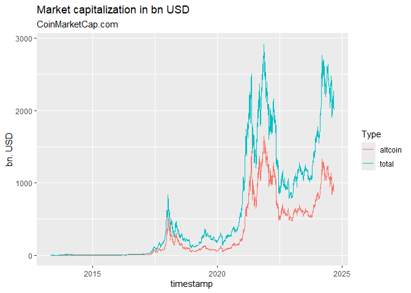

Historical Cryptocurrency Prices for Active and Delisted Tokens!
This is a modification of the original crypto package by jesse vent. It is entirely set up to use means from the tidyverse and provides tibbles with all data available via the web-api of coinmarketcap.com. It does not require an API key but in turn only provides information that is also available through the website of coinmarketcap.com.
It allows the user to retrieve
-
crypto_listings()a list of all coins that were historically listed on CMC (main dataset to avoid delisting bias) according to the CMC API documentation -
crypto_list()a list of all coins that are listed as either being active, delisted or untracked according to the CMC API documentation -
crypto_info()a list of all information available for all available coins according to the CMC API documentation -
crypto_history()the most powerful function of this package that allows to download the entire available history for all coins covered by CMC according to the CMC API documentation -
crypto_global_quotes()a dataset of historical global crypto currency market metrics to the CMC API documentation -
fiat_list()a mapping of all fiat currencies (plus precious metals) available via the CMC WEB API -
exchange_list()a list of all exchanges available as either being active, delisted or untracked according to the CMC API documentation -
exchange_info()a list of all information available for all given exchanges according to the CMC API documentation
Update
Since version 1.4.5 I have added a new function crypto_global_quotes() which retrieves global aggregate market statistics for CMC. There also were some bugs fixed.
Since version 1.4.4 a new function crypto_listings() was introduced that retrieves new/latest/historical listings and listing information at CMC. Additionally some aspects of the other functions have been reworked. We noticed that finalWait = TRUE does not seem to be necessary at the moment, as well as sleep can be set to ‘0’ seconds. If you experience strange behavior this might be due to the the api sending back strange (old) results. In this case let sleep = 60 (the default) and finalWait = TRUE (the default).
Since version 1.4.0 the package has been reworked to retrieve as many assets as possible with one api call, as there is a new “feature” introduced by CMC to send back the initially requested data for each api call within 60 seconds. So one needs to wait 60s before calling the api again. Additionally, since version v1.4.3 the package allows for a data interval larger than daily (e.g. ‘2d’ or ‘7d’/‘weekly’)
Installation
You can install crypto2 from CRAN with
install.packages("crypto2")or directly from github with:
# install.packages("devtools")
devtools::install_github("sstoeckl/crypto2")Package Contribution
The package provides API free and efficient access to all information from https://coinmarketcap.com that is also available through their website. It uses a variety of modification and web-scraping tools from the tidyverse (especially purrr).
As this provides access not only to active coins but also to those that have now been delisted and also those that are categorized as untracked, including historical pricing information, this package provides a valid basis for any Asset Pricing Studies based on crypto currencies that require survivorship-bias-free information. In addition to that, the package maintainer is currently working on also providing delisting returns (similarly to CRSP for stocks) to also eliminate the delisting bias.
Package Usage
First we load the crypto2-package and download the set of active coins from https://coinmarketcap.com (additionally one could load delisted coins with only_Active=FALSE as well as untracked coins with add_untracked=TRUE).
library(crypto2)
library(dplyr)
#>
#> Attache Paket: 'dplyr'
#> Die folgenden Objekte sind maskiert von 'package:stats':
#>
#> filter, lag
#> Die folgenden Objekte sind maskiert von 'package:base':
#>
#> intersect, setdiff, setequal, union
# List all active coins
coins <- crypto_list(only_active=TRUE)Next we download information on the first three coins from that list.
# retrieve information for all (the first 3) of those coins
coin_info <- crypto_info(coins, limit=3, finalWait=FALSE)
#> ❯ Scraping crypto info
#>
#> Scraping https://web-api.coinmarketcap.com/v1/cryptocurrency/info?id=1,2,3 with 65 characters!
#> ❯ Processing crypto info
#>
# and give the first two lines of information per coin
coin_info
#> # A tibble: 3 × 19
#> id name symbol categ…¹ descr…² slug logo subre…³ notice date_…⁴ twitt…⁵
#> * <int> <chr> <chr> <chr> <chr> <chr> <chr> <chr> <chr> <chr> <chr>
#> 1 1 Bitco… BTC coin "## Wh… bitc… http… bitcoin "" 2013-0… ""
#> 2 2 Litec… LTC coin "## Wh… lite… http… liteco… "" 2013-0… "Litec…
#> 3 3 Namec… NMC coin "Namec… name… http… nameco… "" 2013-0… "Namec…
#> # … with 8 more variables: is_hidden <int>, date_launched <lgl>,
#> # self_reported_circulating_supply <lgl>, self_reported_market_cap <lgl>,
#> # tags <list>, self_reported_tags <lgl>, urls <list>, platform <list>, and
#> # abbreviated variable names ¹category, ²description, ³subreddit,
#> # ⁴date_added, ⁵twitter_usernameIn a next step we show the logos of the three coins as provided by https://coinmarketcap.com.


In addition we show tags provided by https://coinmarketcap.com.
coin_info %>% select(slug,tags) %>% tidyr::unnest(tags) %>% group_by(slug) %>% slice(1,n())
#> # A tibble: 6 × 2
#> # Groups: slug [3]
#> slug tags
#> <chr> <chr>
#> 1 bitcoin mineable
#> 2 bitcoin paradigm-portfolio
#> 3 litecoin mineable
#> 4 litecoin medium-of-exchange
#> 5 namecoin mineable
#> 6 namecoin platformAdditionally: Here are some urls pertaining to these coins as provided by https://coinmarketcap.com.
coin_info %>% select(slug,urls) %>% tidyr::unnest(urls) %>% filter(name %in% c("reddit","twitter"))
#> # A tibble: 5 × 3
#> slug name url
#> <chr> <chr> <chr>
#> 1 bitcoin reddit https://reddit.com/r/bitcoin
#> 2 litecoin twitter https://twitter.com/LitecoinProject
#> 3 litecoin reddit https://reddit.com/r/litecoin
#> 4 namecoin twitter https://twitter.com/Namecoin
#> 5 namecoin reddit https://reddit.com/r/namecoinIn a next step we download time series data for these coins.
# retrieve historical data for all (the first 3) of them
coin_hist <- crypto_history(coins, limit=3, start_date="20210101", end_date="20210105", finalWait=FALSE)
#> ❯ Scraping historical crypto data
#>
#> ❯ Processing historical crypto data
#>
# and give the first two times of information per coin
coin_hist %>% group_by(slug) %>% slice(1:2)
#> # A tibble: 6 × 16
#> # Groups: slug [3]
#> timestamp id slug name symbol ref_cur open high low
#> <dttm> <int> <chr> <chr> <chr> <chr> <dbl> <dbl> <dbl>
#> 1 2021-01-01 23:59:59 1 bitcoin Bitc… BTC USD 2.90e+4 2.96e+4 2.88e+4
#> 2 2021-01-02 23:59:59 1 bitcoin Bitc… BTC USD 2.94e+4 3.32e+4 2.91e+4
#> 3 2021-01-01 23:59:59 2 liteco… Lite… LTC USD 1.25e+2 1.33e+2 1.23e+2
#> 4 2021-01-02 23:59:59 2 liteco… Lite… LTC USD 1.26e+2 1.40e+2 1.24e+2
#> 5 2021-01-01 23:59:59 3 nameco… Name… NMC USD 4.39e-1 4.63e-1 4.32e-1
#> 6 2021-01-02 23:59:59 3 nameco… Name… NMC USD 4.51e-1 5.10e-1 4.15e-1
#> # … with 7 more variables: close <dbl>, volume <dbl>, market_cap <dbl>,
#> # time_open <dttm>, time_close <dttm>, time_high <dttm>, time_low <dttm>Similarly, we could download the same data on a monthly basis.
# retrieve historical data for all (the first 3) of them
coin_hist_m <- crypto_history(coins, limit=3, start_date="20210101", end_date="20210501", interval ="monthly", finalWait=FALSE)
#> ❯ Scraping historical crypto data
#>
#> ❯ Processing historical crypto data
#>
# and give the first two times of information per coin
coin_hist_m %>% group_by(slug) %>% slice(1:2)
#> # A tibble: 6 × 16
#> # Groups: slug [3]
#> timestamp id slug name symbol ref_cur open high low
#> <dttm> <int> <chr> <chr> <chr> <chr> <dbl> <dbl> <dbl>
#> 1 2021-01-01 23:59:59 1 bitcoin Bitc… BTC USD 2.90e+4 2.96e+4 2.88e+4
#> 2 2021-02-01 23:59:59 1 bitcoin Bitc… BTC USD 3.31e+4 3.46e+4 3.24e+4
#> 3 2021-01-01 23:59:59 2 liteco… Lite… LTC USD 1.25e+2 1.33e+2 1.23e+2
#> 4 2021-02-01 23:59:59 2 liteco… Lite… LTC USD 1.30e+2 1.36e+2 1.26e+2
#> 5 2021-01-01 23:59:59 3 nameco… Name… NMC USD 4.39e-1 4.63e-1 4.32e-1
#> 6 2021-02-01 23:59:59 3 nameco… Name… NMC USD 7.82e-1 8.05e-1 7.48e-1
#> # … with 7 more variables: close <dbl>, volume <dbl>, market_cap <dbl>,
#> # time_open <dttm>, time_close <dttm>, time_high <dttm>, time_low <dttm>Alternatively, we could determine the price of these coins in other currencies. A list of such currencies is available as fiat_list()
fiats <- fiat_list()
fiats
#> # A tibble: 93 × 4
#> id name sign symbol
#> <int> <chr> <chr> <chr>
#> 1 2781 United States Dollar $ USD
#> 2 2782 Australian Dollar $ AUD
#> 3 2783 Brazilian Real R$ BRL
#> 4 2784 Canadian Dollar $ CAD
#> 5 2785 Swiss Franc Fr CHF
#> 6 2786 Chilean Peso $ CLP
#> 7 2787 Chinese Yuan ¥ CNY
#> 8 2788 Czech Koruna Kč CZK
#> 9 2789 Danish Krone kr DKK
#> 10 2790 Euro € EUR
#> # … with 83 more rowsSo we download the time series again depicting prices in terms of Bitcoin and Euro (note that multiple currencies can be given to convert, separated by “,”).
# retrieve historical data for all (the first 3) of them
coin_hist2 <- crypto_history(coins, convert="BTC,EUR", limit=3, start_date="20210101", end_date="20210105", finalWait=FALSE)
#> ❯ Scraping historical crypto data
#>
#> ❯ Processing historical crypto data
#>
# and give the first two times of information per coin
coin_hist2 %>% group_by(slug,ref_cur) %>% slice(1:2)
#> # A tibble: 12 × 16
#> # Groups: slug, ref_cur [6]
#> timestamp id slug name symbol ref_cur open high low
#> <dttm> <int> <chr> <chr> <chr> <chr> <dbl> <dbl> <dbl>
#> 1 2021-01-01 23:59:43 1 bitco… Bitc… BTC BTC 1 e+0 1.00e+0 9.98e-1
#> 2 2021-01-02 23:59:43 1 bitco… Bitc… BTC BTC 1 e+0 1.00e+0 9.99e-1
#> 3 2021-01-01 23:59:06 1 bitco… Bitc… BTC EUR 2.37e+4 2.43e+4 2.36e+4
#> 4 2021-01-02 23:59:06 1 bitco… Bitc… BTC EUR 2.42e+4 2.73e+4 2.40e+4
#> 5 2021-01-01 23:59:43 2 litec… Lite… LTC BTC 4.30e-3 4.56e-3 4.27e-3
#> 6 2021-01-02 23:59:43 2 litec… Lite… LTC BTC 4.30e-3 4.24e-3 4.23e-3
#> 7 2021-01-01 23:59:06 2 litec… Lite… LTC EUR 1.02e+2 1.09e+2 1.01e+2
#> 8 2021-01-02 23:59:06 2 litec… Lite… LTC EUR 1.04e+2 1.16e+2 1.02e+2
#> 9 2021-01-01 23:59:43 3 namec… Name… NMC BTC 1.51e-5 1.58e-5 1.50e-5
#> 10 2021-01-02 23:59:43 3 namec… Name… NMC BTC 1.54e-5 1.57e-5 1.31e-5
#> 11 2021-01-01 23:59:06 3 namec… Name… NMC EUR 3.60e-1 3.80e-1 3.54e-1
#> 12 2021-01-02 23:59:06 3 namec… Name… NMC EUR 3.71e-1 4.21e-1 3.41e-1
#> # … with 7 more variables: close <dbl>, volume <dbl>, market_cap <dbl>,
#> # time_open <dttm>, time_close <dttm>, time_high <dttm>, time_low <dttm>As a new features in version 1.4.4. we introduced the possibility to download historical listings and listing information (add quote = TRUE).
latest_listings <- crypto_listings(which="latest", limit=10, quote=TRUE, finalWait=FALSE)
latest_listings
#> # A tibble: 10 × 23
#> id name symbol slug self_…¹ self_…² tvl_r…³ last_upd…⁴ USD_p…⁵ USD_v…⁶
#> <int> <chr> <chr> <chr> <lgl> <lgl> <lgl> <date> <dbl> <dbl>
#> 1 1 Bitcoin BTC bitc… NA NA NA 2022-10-25 1.95e+4 2.50e10
#> 2 52 XRP XRP xrp NA NA NA 2022-10-25 4.53e-1 1.11e 9
#> 3 74 Dogeco… DOGE doge… NA NA NA 2022-10-25 6.08e-2 2.41e 8
#> 4 825 Tether USDT teth… NA NA NA 2022-10-25 1.00e+0 3.42e10
#> 5 1027 Ethere… ETH ethe… NA NA NA 2022-10-25 1.38e+3 1.14e10
#> 6 1839 BNB BNB bnb NA NA NA 2022-10-25 2.79e+2 5.43e 8
#> 7 2010 Cardano ADA card… NA NA NA 2022-10-25 3.71e-1 3.57e 8
#> 8 3408 USD Co… USDC usd-… NA NA NA 2022-10-25 1.00e+0 2.58e 9
#> 9 4687 Binanc… BUSD bina… NA NA NA 2022-10-25 1.00e+0 4.48e 9
#> 10 5426 Solana SOL sola… NA NA NA 2022-10-25 2.91e+1 5.26e 8
#> # … with 13 more variables: USD_volume_change_24h <dbl>,
#> # USD_percent_change_1h <dbl>, USD_percent_change_24h <dbl>,
#> # USD_percent_change_7d <dbl>, USD_percent_change_30d <dbl>,
#> # USD_percent_change_60d <dbl>, USD_percent_change_90d <dbl>,
#> # USD_market_cap <dbl>, USD_market_cap_dominance <dbl>,
#> # USD_fully_diluted_market_cap <dbl>, USD_tvl <lgl>,
#> # USD_market_cap_by_total_supply <dbl>, USD_last_updated <chr>, and …An additional feature that was added in version 1.4.5 retrieves global aggregate market statistics for CMC.
all_quotes <- crypto_global_quotes(which="historical", quote=TRUE)
all_quotes
#> # A tibble: 3,459 × 12
#> timestamp btc_domi…¹ activ…² activ…³ activ…⁴ USD_t…⁵ USD_t…⁶ USD_t…⁷ USD_a…⁸
#> <date> <dbl> <int> <int> <int> <dbl> <dbl> <dbl> <dbl>
#> 1 2013-04-29 94.2 NA NA NA 1.58e9 0 NA 9.19e7
#> 2 2013-04-30 94.4 NA NA NA 1.69e9 0 NA 9.47e7
#> 3 2013-05-01 94.4 NA NA NA 1.64e9 0 NA 9.24e7
#> 4 2013-05-02 94.1 NA NA NA 1.33e9 0 NA 7.90e7
#> 5 2013-05-03 94.2 NA NA NA 1.28e9 0 NA 7.45e7
#> 6 2013-05-04 93.9 NA NA NA 1.17e9 0 NA 7.16e7
#> 7 2013-05-05 94.0 NA NA NA 1.34e9 0 NA 8.07e7
#> 8 2013-05-06 94.1 NA NA NA 1.37e9 0 NA 8.12e7
#> 9 2013-05-07 94.4 NA NA NA 1.31e9 0 NA 7.38e7
#> 10 2013-05-08 94.4 NA NA NA 1.32e9 0 NA 7.43e7
#> # … with 3,449 more rows, 3 more variables: USD_altcoin_volume_24h <dbl>,
#> # USD_altcoin_volume_24h_reported <dbl>, USD_timestamp <chr>, and abbreviated
#> # variable names ¹btc_dominance, ²active_cryptocurrencies, ³active_exchanges,
#> # ⁴active_market_pairs, ⁵USD_total_market_cap, ⁶USD_total_volume_24h,
#> # ⁷USD_total_volume_24h_reported, ⁸USD_altcoin_market_capWe can use those quotes to plot information on the aggregate market capitalization:
all_quotes %>% select(timestamp, USD_total_market_cap, USD_altcoin_market_cap) %>%
tidyr::pivot_longer(cols = 2:3, names_to = "Market Cap", values_to = "bn. USD") %>%
tidyr::separate(`Market Cap`,into = c("Currency","Type","Market","Cap")) %>%
dplyr::mutate(`bn. USD`=`bn. USD`/1000000000) %>%
ggplot2::ggplot(ggplot2::aes(x=timestamp,y=`bn. USD`,color=Type)) + ggplot2::geom_line() +
ggplot2::labs(title="Market capitalization in bn USD", subtitle="CoinMarketCap.com")
Last and least, one can get information on exchanges. For this download a list of active/inactive/untracked exchanges using exchange_list():
exchanges <- exchange_list(only_active=TRUE)
exchanges
#> # A tibble: 520 × 6
#> id name slug is_active first_historical_data last_histor…¹
#> <int> <chr> <chr> <int> <date> <date>
#> 1 16 Poloniex poloniex 1 2018-04-26 2022-10-25
#> 2 21 BTCC btcc 1 2018-04-26 2022-10-25
#> 3 22 Bittrex bittrex 1 2018-04-26 2022-10-25
#> 4 24 Kraken kraken 1 2018-04-26 2022-10-25
#> 5 34 Bittylicious bittylicious 1 2018-04-26 2022-10-25
#> 6 36 CEX.IO cex-io 1 2018-04-26 2022-10-25
#> 7 37 Bitfinex bitfinex 1 2018-04-26 2022-10-25
#> 8 42 HitBTC hitbtc 1 2018-04-26 2022-10-25
#> 9 50 EXMO exmo 1 2018-04-26 2022-10-25
#> 10 61 Okcoin okcoin 1 2018-04-26 2022-10-25
#> # … with 510 more rows, and abbreviated variable name ¹last_historical_dataand then download information on “binance” and “bittrex”:
ex_info <- exchange_info(exchanges %>% filter(slug %in% c('binance','bittrex')), finalWait=FALSE)
#> ❯ Scraping exchange info
#>
#> Scraping exchanges from https://web-api.coinmarketcap.com/v1/exchange/info?id=22,270 with 60 characters!
#> ❯ Processing exchange info
#>
ex_info
#> # A tibble: 2 × 19
#> id name slug descr…¹ notice logo type date_…² is_hi…³ is_re…⁴ maker…⁵
#> * <int> <chr> <chr> <chr> <chr> <chr> <chr> <chr> <int> <lgl> <dbl>
#> 1 22 Bittrex bitt… <NA> "" http… "" 2014-0… 0 NA 0
#> 2 270 Binance bina… "## Wh… "Bina… http… "" 2017-0… 0 NA 0.02
#> # … with 8 more variables: taker_fee <dbl>, spot_volume_usd <dbl>,
#> # spot_volume_last_updated <dttm>, weekly_visits <int>, tags <lgl>,
#> # urls <list>, countries <lgl>, fiats <list>, and abbreviated variable names
#> # ¹description, ²date_launched, ³is_hidden, ⁴is_redistributable, ⁵maker_feeThen we can access information on the fee structure,
ex_info %>% select(contains("fee"))
#> # A tibble: 2 × 2
#> maker_fee taker_fee
#> <dbl> <dbl>
#> 1 0 0
#> 2 0.02 0.04the amount of cryptocurrencies being traded (in USD)
ex_info %>% select(contains("spot"))
#> # A tibble: 2 × 2
#> spot_volume_usd spot_volume_last_updated
#> <dbl> <dttm>
#> 1 16025712. 2022-10-25 15:10:16
#> 2 9656049729. 2022-10-25 15:10:16or the fiat currencies allowed:
ex_info %>% select(slug,fiats) %>% tidyr::unnest(fiats)
#> # A tibble: 47 × 2
#> slug value
#> <chr> <chr>
#> 1 bittrex USD
#> 2 binance AED
#> 3 binance ARS
#> 4 binance AUD
#> 5 binance AZN
#> 6 binance BRL
#> 7 binance CAD
#> 8 binance CHF
#> 9 binance CLP
#> 10 binance COP
#> # … with 37 more rowsAuthor/License
- Sebastian Stöckl - Package Creator, Modifier & Maintainer - sstoeckl on github
This project is licensed under the MIT License - see the <license.md> file for details</license.md>
Acknowledgments
- Thanks to the team at https://coinmarketcap.com for the great work they do, especially to Alice Liu (Research Lead) and Aaron K. for their support with regard to information on delistings.
- Thanks to Jesse Vent for providing the (not fully research compatible)
crypto-package that inspired this package.